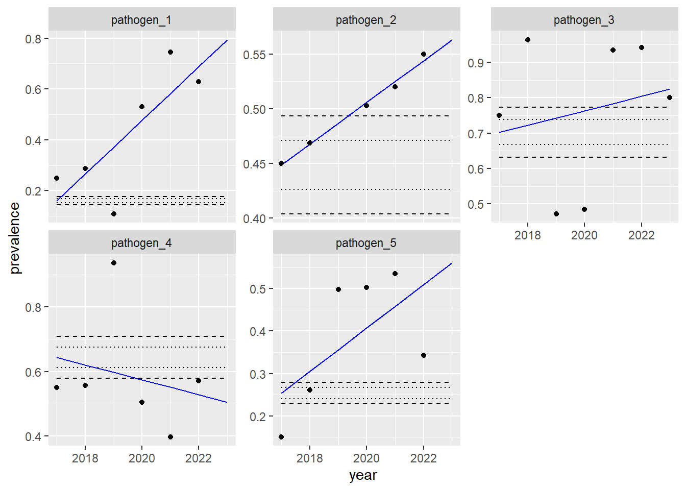
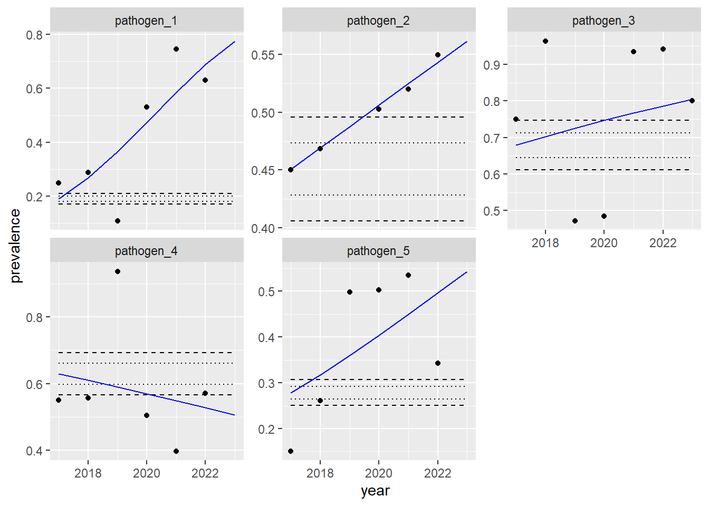

## CHUNK: Setup## Set use_example_data parameter to FALSE to import project data,usePackage <-function(p, repo ="https://cran.rstudio.com/") {if (!is.element(p, installed.packages()[,1])) install.packages(p, dep =TRUE, repos = repo)library(p, character.only =TRUE)}usePackage("tidyverse") # Common OperationsusePackage("magrittr") # PipesusePackage("ggplot2") # PlotsusePackage("broom") # Get Model ComponentsusePackage("here") # Get Paths
Import example data
## CHUNK: Import example dataexample_data_path <- here::here("example_data.csv")example_data <-read_csv(file = example_data_path)example_data %<>%mutate(prevalence = prevalence,n = n, successes =round(prevalence * n), failures = n - successes)thedata <- example_data
Set years and bounds shown on plots
# Get the minimum and maximum year to predict and plot.years_to_predict <-seq(min(thedata$year), max(thedata$year))names(years_to_predict) <- years_to_predict# Set the percent change bounds to show on plots.# bounds_value will be multiplied by 100 to represent as a percentage.bounds_value <-0.05
Linear Model
A linear regression describes the linear relationship between an independent (predictor) variable and a dependent (response) variable. The fitted regression line is also called the line of best fit because it minimizes differences between predicted responses and the observed data (i.e., it minimizes residuals).
Here, we treat measures of prevalence as continuous data, conduct a linear regression, and plot the line of best fit.
Fit a linear regression model
## CHUNK: Fit a regression model for each type of occurrence in the data set.do_reg <-function(.data) {lm(formula = prevalence ~ year, .data)}linear_model_list <- thedata %>%group_by(name) %>%# Create nested object with data set.nest(.key ="observations") %>%mutate(# Run the regression.regmodel =map(observations, do_reg), # Get the regression coefficient for year; the slope of the regression line.coeff = regmodel[[1]]$coefficients['year'], # Get the p-value of the regression coefficient.pval =summary(regmodel[[1]])$coefficients['year', 'Pr(>|t|)'], glance =map(regmodel, broom::glance)) %>%unnest(glance)
The coefficient is the slope of the line of best fit; it is the predicted change in prevalence per year.
When the slope is positive (> 0), there is a positive trend.
When the slope is negative (< 0), there is a negative trend.
The p-value is the significance of the coefficient (via a t-test).
The null hypothesis is that the coefficient (the slope) is 0.
The R-squared is the model’s coefficient of determination, which is a measurement of the proportion of variance explained by the model (i.e., goodness of fit).
The adjusted R-squared is the model’s coefficient of determination, normalized by the number of model terms.
## CHUNK: Plot the data, expected values, and change bounds.## warning=FALSE to suppress missing values warning.ggplot() +# Plot lower and upper bounds of percent change.geom_line(data = linear_model_predictions, aes(x = year, y = lower_bound_02), linetype ='dashed') +geom_line(data = linear_model_predictions, aes(x = year, y = lower_bound_01), linetype ='dotted') +geom_line(data = linear_model_predictions, aes(x = year, y = upper_bound_01), linetype ='dotted') +geom_line(data = linear_model_predictions, aes(x = year, y = upper_bound_02), linetype ='dashed') +# Plot the predicted values.geom_line(data = linear_model_predictions, aes(x = year, y = prediction), colour ="blue") +# Alternative method of generating a line of best fit.# geom_smooth(data = thedata, aes(x = year, y = prevalence), method = lm, se = FALSE) +# Plot the raw data.geom_point(data = thedata, aes(x = year, y = prevalence)) +# Label the y axis.labs(y ="prevalence") +# Facet, wrapping label names.facet_wrap(facets =vars(name), scales ="free_y", labeller =labeller(name =label_wrap_gen(20)))

Dotted horizontal lines represent a 5% change in prevalence.
Dashed horizontal lines represent a 10% change in prevalence.
Binomial Model
Above, we treated prevalence data as continuous, even though they are not continuous. Prevalence data are a proportion derived from discrete counts of successes and failures of individual trials, and therefore have a binomial (and not normal) distribution.
At an individual trial level, where the outcome is either 0 or 1, we can use logistic regression to assess relationships between variables.
At a group (prevalence) level, where the outcome is a series of 0s and 1s (or a proportion/percentage), we can use a binomial regression to assess relationships between variables.
Fit a binomial regression model
## CHUNK: Fit a regression model for each type of occurrence in the data set.do_br <-function(.data) {# Standard model, using vectors of successes and failures as the dependent variable.glm(formula =cbind(successes, failures) ~ year, family =binomial(link ="logit"), data = .data)# Alternative model, using prevalence as the dependent variable, weighted by# the number of trials/observations (n). These models should be equivalent.# glm(formula = prevalence ~ year, # family = binomial(link = "logit"), # weights = n, # data = .data)}binomial_model_list <- thedata %>%group_by(name) %>%# Create nested object with data set.nest(.key ="observations") %>%mutate(regmodel =map(observations, do_br), coeff =exp(coef(regmodel[[1]]))[['year']], pval =summary(regmodel[[1]])$coefficients['year', 'Pr(>|z|)'], glance =map(regmodel, broom::glance)) %>%unnest(glance)# So when we increase by one unit, the odds of Y are multiplied by exp(b1)
The coefficient is the odds ratio; it is a fold change (a multiplicative factor) in the odds of occurrence year over year.
When the odds ratio is greater than 1, there is a positive trend.
When the odds ratio is less than 1, there is a negative trend.
The p-value is the significance of the coefficient (via a z-test).
The null hypothesis is that the coefficient (the odds ratio) is 1.
Plot
Calculate expected values
predict_from_binomial_model <-function(.model, .xvalues) {# Setting type = 'response' returns probabilities; type = 'link' returns logits.# newdata must be list/df with the predictor(s) as column names. predictions <-predict(object = .model, newdata =tibble(year = .xvalues), type ="response")# Return a df with predictor column(s).tibble(year = .xvalues, prediction = predictions)}binomial_model_predictions <- binomial_model_list %>%mutate(predicted_values =map(regmodel, predict_from_binomial_model, years_to_predict)) %>%unnest(predicted_values) %>%mutate(delta_year_one = prediction -first(prediction), lower_bound_02 =first(prediction) * (1- bounds_value *2),lower_bound_01 =first(prediction) * (1- bounds_value),upper_bound_01 =first(prediction) * (1+ bounds_value),upper_bound_02 =first(prediction) * (1+ bounds_value *2), fold_change =abs( first(prediction) - (prediction) ) /first(prediction), )
Plot the data and expected values
## CHUNK: Plot the data, expected values, and change bounds.## warning=FALSE to suppress missing values warning.ggplot() +# Plot lower and upper bounds of percent change.geom_line(data = binomial_model_predictions, aes(x = year, y = lower_bound_02), linetype ='dashed') +geom_line(data = binomial_model_predictions, aes(x = year, y = lower_bound_01), linetype ='dotted') +geom_line(data = binomial_model_predictions, aes(x = year, y = upper_bound_01), linetype ='dotted') +geom_line(data = binomial_model_predictions, aes(x = year, y = upper_bound_02), linetype ='dashed') +# Plot the predicted values.geom_line(data = binomial_model_predictions, aes(x = year, y = prediction), colour ="blue") +# Plot the raw data.geom_point(data = thedata, aes(x = year, y = prevalence)) +# Label the y axis.labs(y ="prevalence") +# Facet, wrapping label names.facet_wrap(facets =vars(name), scales ="free_y", labeller =labeller(name =label_wrap_gen(20)))

Dotted horizontal lines represent a 5% change in prevalence.
Dashed horizontal lines represent a 10% change in prevalence.
Source Code
---title: "Calculate and visualize trends in prevalence data"author: "Brennan Chapman"format: html: code-fold: TRUE code-tools: TRUEeditor_options: chunk_output_type: consoleparams: use_example_data: TRUE---```{r message=FALSE, warning=FALSE}#| code-summary: Setup## CHUNK: Setup## Set use_example_data parameter to FALSE to import project data,usePackage <-function(p, repo ="https://cran.rstudio.com/") {if (!is.element(p, installed.packages()[,1])) install.packages(p, dep =TRUE, repos = repo)library(p, character.only =TRUE)}usePackage("tidyverse") # Common OperationsusePackage("magrittr") # PipesusePackage("ggplot2") # PlotsusePackage("broom") # Get Model ComponentsusePackage("here") # Get Paths``````{r message=FALSE, echo=!params$use_example_data, eval=!params$use_example_data}#| code-summary: Import data## CHUNK: Import datathedata_path <- here::here("proj_data.csv")thedata <-read_csv(file = thedata_path)# Clean the data.thedata %<>%pivot_longer(cols =!c("term", "year")) %>%pivot_wider(names_from = term) %>%mutate(prevalence = Percentage *0.01,n =`Isolate Tested`, successes =round(prevalence * n), failures = n - successes)``````{r message=FALSE, echo=params$use_example_data, eval=params$use_example_data}#| code-summary: Import example data## CHUNK: Import example dataexample_data_path <- here::here("example_data.csv")example_data <-read_csv(file = example_data_path)example_data %<>%mutate(prevalence = prevalence,n = n, successes =round(prevalence * n), failures = n - successes)thedata <- example_data``````{r}#| code-summary: Set years and bounds shown on plots# Get the minimum and maximum year to predict and plot.years_to_predict <-seq(min(thedata$year), max(thedata$year))names(years_to_predict) <- years_to_predict# Set the percent change bounds to show on plots.# bounds_value will be multiplied by 100 to represent as a percentage.bounds_value <-0.05```## Linear ModelA linear regression describes the linear relationship between an independent(predictor) variable and a dependent (response) variable. The fitted regressionline is also called the *line of best fit* because it minimizes differencesbetween predicted responses and the observed data (i.e., it minimizes residuals).Here, we treat measures of prevalence as *continuous data*, conduct a linearregression, and plot the line of best fit.```{r message=FALSE}#| code-summary: Fit a linear regression model## CHUNK: Fit a regression model for each type of occurrence in the data set.do_reg <-function(.data) {lm(formula = prevalence ~ year, .data)}linear_model_list <- thedata %>%group_by(name) %>%# Create nested object with data set.nest(.key ="observations") %>%mutate(# Run the regression.regmodel =map(observations, do_reg), # Get the regression coefficient for year; the slope of the regression line.coeff = regmodel[[1]]$coefficients['year'], # Get the p-value of the regression coefficient.pval =summary(regmodel[[1]])$coefficients['year', 'Pr(>|t|)'], glance =map(regmodel, broom::glance)) %>%unnest(glance)``````{r echo=FALSE}# Print the models.linear_model_list %>%arrange(name) %>%select(c(name, coeff, pval, r.squared, adj.r.squared))```### Interpretation- The *coefficient* is the slope of the line of best fit; it is the predicted change in prevalence per year. - When the slope is positive (> 0), there is a positive trend. - When the slope is negative (< 0), there is a negative trend.- The *p-value* is the significance of the coefficient (via a [t-test](https://en.wikipedia.org/wiki/Student%27s_t-test)). - The null hypothesis is that the coefficient (the slope) is 0.- The *R-squared* is the model's [coefficient of determination](https://en.wikipedia.org/wiki/Coefficient_of_determination), which is a measurement of the proportion of variance explained by the model (i.e., goodness of fit).- The *adjusted R-squared* is the model's coefficient of determination, normalized by the number of model terms.### Plot```{r message = FALSE}#| code-summary: Calculate expected valuespredict_from_model <-function(themodel, topredict) { broom::augment(themodel, newdata =tibble(year = topredict))}predict_from_linear_model <-function(.model, .xvalues) {# newdata must be list/df with the predictor(s) as column names. predictions <-predict(object = .model, newdata =tibble(year = .xvalues), type ="response")# Return a df with predictor column(s).tibble(year = .xvalues, prediction = predictions)}linear_model_predictions <- linear_model_list %>%mutate(predicted_values =map(regmodel, predict_from_linear_model, years_to_predict)) %>%unnest(predicted_values) %>%group_by(name) %>%arrange(name, year) %>%mutate(delta_year_one = prediction -first(prediction), lower_bound_02 =first(prediction) * (1- bounds_value *2),lower_bound_01 =first(prediction) * (1- bounds_value),upper_bound_01 =first(prediction) * (1+ bounds_value),upper_bound_02 =first(prediction) * (1+ bounds_value *2), fold_change =abs( first(prediction) - (prediction) ) /first(prediction) )``````{r warning=FALSE}#| code-summary: Plot the data and expected values## CHUNK: Plot the data, expected values, and change bounds.## warning=FALSE to suppress missing values warning.ggplot() +# Plot lower and upper bounds of percent change.geom_line(data = linear_model_predictions, aes(x = year, y = lower_bound_02), linetype ='dashed') +geom_line(data = linear_model_predictions, aes(x = year, y = lower_bound_01), linetype ='dotted') +geom_line(data = linear_model_predictions, aes(x = year, y = upper_bound_01), linetype ='dotted') +geom_line(data = linear_model_predictions, aes(x = year, y = upper_bound_02), linetype ='dashed') +# Plot the predicted values.geom_line(data = linear_model_predictions, aes(x = year, y = prediction), colour ="blue") +# Alternative method of generating a line of best fit.# geom_smooth(data = thedata, aes(x = year, y = prevalence), method = lm, se = FALSE) +# Plot the raw data.geom_point(data = thedata, aes(x = year, y = prevalence)) +# Label the y axis.labs(y ="prevalence") +# Facet, wrapping label names.facet_wrap(facets =vars(name), scales ="free_y", labeller =labeller(name =label_wrap_gen(20)))```Dotted horizontal lines represent a `r bounds_value*100`% change in prevalence.Dashed horizontal lines represent a `r bounds_value*100*2`% change in prevalence.## Binomial ModelAbove, we treated prevalence data as continuous, even though they are not continuous.Prevalence data are a proportion derived from discrete counts of successes and failures of individual trials, and therefore have a binomial (and not normal) distribution. At an individual trial level, where the outcome is either 0 or 1, we can use logistic regression to assess relationships between variables.At a group (prevalence) level, where the outcome is a series of 0s and 1s (or aproportion/percentage), we can use a binomial regression to assess relationshipsbetween variables.```{r}#| code-summary: Fit a binomial regression model## CHUNK: Fit a regression model for each type of occurrence in the data set.do_br <-function(.data) {# Standard model, using vectors of successes and failures as the dependent variable.glm(formula =cbind(successes, failures) ~ year, family =binomial(link ="logit"), data = .data)# Alternative model, using prevalence as the dependent variable, weighted by# the number of trials/observations (n). These models should be equivalent.# glm(formula = prevalence ~ year, # family = binomial(link = "logit"), # weights = n, # data = .data)}binomial_model_list <- thedata %>%group_by(name) %>%# Create nested object with data set.nest(.key ="observations") %>%mutate(regmodel =map(observations, do_br), coeff =exp(coef(regmodel[[1]]))[['year']], pval =summary(regmodel[[1]])$coefficients['year', 'Pr(>|z|)'], glance =map(regmodel, broom::glance)) %>%unnest(glance)# So when we increase by one unit, the odds of Y are multiplied by exp(b1)``````{r echo=FALSE}# Print the models.binomial_model_list %>%arrange(name) %>%select(c(name, coeff, pval))```### Interpretation- The *coefficient* is the odds ratio; it is a fold change (a multiplicative factor) in the odds of occurrence year over year. - When the odds ratio is greater than 1, there is a positive trend. - When the odds ratio is less than 1, there is a negative trend.- The *p-value* is the significance of the coefficient (via a [z-test](https://en.wikipedia.org/wiki/Z-test)). - The null hypothesis is that the coefficient (the odds ratio) is 1.### Plot```{r}#| code-summary: Calculate expected valuespredict_from_binomial_model <-function(.model, .xvalues) {# Setting type = 'response' returns probabilities; type = 'link' returns logits.# newdata must be list/df with the predictor(s) as column names. predictions <-predict(object = .model, newdata =tibble(year = .xvalues), type ="response")# Return a df with predictor column(s).tibble(year = .xvalues, prediction = predictions)}binomial_model_predictions <- binomial_model_list %>%mutate(predicted_values =map(regmodel, predict_from_binomial_model, years_to_predict)) %>%unnest(predicted_values) %>%mutate(delta_year_one = prediction -first(prediction), lower_bound_02 =first(prediction) * (1- bounds_value *2),lower_bound_01 =first(prediction) * (1- bounds_value),upper_bound_01 =first(prediction) * (1+ bounds_value),upper_bound_02 =first(prediction) * (1+ bounds_value *2), fold_change =abs( first(prediction) - (prediction) ) /first(prediction), )``````{r warning=FALSE}#| code-summary: Plot the data and expected values## CHUNK: Plot the data, expected values, and change bounds.## warning=FALSE to suppress missing values warning.ggplot() +# Plot lower and upper bounds of percent change.geom_line(data = binomial_model_predictions, aes(x = year, y = lower_bound_02), linetype ='dashed') +geom_line(data = binomial_model_predictions, aes(x = year, y = lower_bound_01), linetype ='dotted') +geom_line(data = binomial_model_predictions, aes(x = year, y = upper_bound_01), linetype ='dotted') +geom_line(data = binomial_model_predictions, aes(x = year, y = upper_bound_02), linetype ='dashed') +# Plot the predicted values.geom_line(data = binomial_model_predictions, aes(x = year, y = prediction), colour ="blue") +# Plot the raw data.geom_point(data = thedata, aes(x = year, y = prevalence)) +# Label the y axis.labs(y ="prevalence") +# Facet, wrapping label names.facet_wrap(facets =vars(name), scales ="free_y", labeller =labeller(name =label_wrap_gen(20)))```Dotted horizontal lines represent a `r bounds_value*100`% change in prevalence.Dashed horizontal lines represent a `r bounds_value*100*2`% change in prevalence.